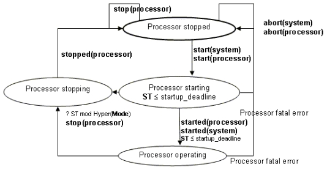

Previous
Next
Previous
Next 
| 6.1 Processors |
A
processor is an abstraction of hardware and software that is responsible for scheduling and
executing threads. Processors execute threads declared in application software systems and in
devices that can be accessed from those processors. Processors may contain memories and
may access memories and devices via buses.
Legality
Rules
|
Category
|
Type
|
Implementation
|
|
processor
|
Features:
Flow specifications: yes
Properties: yes
|
Subcomponents:
Subprogram calls: no
Connections: no
Flows: yes
Modes: yes
Properties: yes
|
A
processor component type can contain port, port group, server subprogram, and required bus
access declarations. It may contain flow specifications as well as property associations.
A
processor component implementation can contain declarations of memory subcomponents.
A
processor implementation can contain a modes subclause, flows subclause, and a properties
subclause.
A
processor implementation must not contain a connection subclause or a subprogram calls
subclause.
A
processor component must contain at least one memory component or require at least one bus
access.
Standard
Properties
--
Hardware description properties
Hardware_Description_Source_Text: inherit list
of aadlstring
Hardware_Source_Language:
Supported_Hardware_Source_Languages
--
Properties related to source text that provides thread scheduling
services
Source_Text: inherit list
of aadlstring
Source_Language:
Supported_Source_Languages
Source_Code_Size:
Size
Source_Data_Size:
Size
Source_Stack_Size:
Size
Allowed_Memory_Binding_Class:
inherit list of classifier
(memory, system, processor)
Allowed_Memory_Binding: inherit
list of reference (memory, system,
processor)
Actual_Memory_Binding: inherit reference
(memory)
--
Processor initialization properties
Startup_Deadline:
inherit Time
--
Properties specifying provided thread execution support
Thread_Limit: aadlinteger
0 .. value(Max_Thread_Limit)
=>
value(Max_Thread_Limit)
Allowed_Dispatch_Protocol:
list of Supported_Dispatch_Protocols
Allowed_Period: list of
Time_Range
Server_Subprogram_Call_Binding: inherit
list of reference (thread,
processor)
Process_Swap_Execution_Time:
Time_Range
Thread_Swap_Execution_Time:
Time_Range
Supported_Source_Language:
list of Supported_Source_Languages
--
Proeprties related to data movement in memory
Assign_Time:
Time
Assign_Byte_Time:
Time
Assign_Fixed_Time:
Time
--
Properties related to the hardware clock
Clock_Jitter:
Time
Clock_Period:
Time
Clock_Period_Range:
Time_Range
NOTES:
The above is list of the predefined processor properties. Additional processor
properties may be
declared in user-defined property sets. Candidates include properties that describe capabilities
and
accuracy of a synchronized clock, e.g. drift rates, differences across processors.
Semantics
A
processor is the execution platform component that is capable of scheduling and executing
threads. Threads will be bound to a processor for their execution that supports the dispatch
protocol required by the thread. The Allowed_Dispatch_Protocol property specifies the
dispatch protocols that a processor supplies.
A
processor to which threads are bound must have a Scheduling_Protocol property value.
Support
for thread execution may be embedded in the processor hardware or it may require
software that implements processor functionality such as thread scheduling, e.g., an operating
system kernel or other software virtual machine. Such software must be bound to a memory
component that is accessible to the processor.
The
code that threads execute and the data they access must be bound to a memory component
that is accessible to the processor on which the thread executes.
If
a processor executes device driver software associated with a device, then the processor must
have access to the corresponding device component.
Flow
specifications model logical flow through processors. For example, they may represent
requests for operating system services through server subprograms or ports.
The
source text property may include a reference to source text that is a model of the hardware in
a hardware description language. This provides support for the simulation of hardware.
Modes
allow processor components to have different property values under different operational
processor modes. Modes may be used to specify different runtime selectable configurations of
processor implementations.
Processor
states and transitions are illustrated in the hybrid automaton shown in Figure 9. The
labels in this hybrid automaton interact with labels in the system hybrid automaton (see Figure
17) and the process hybrid automaton (see Figure 8). The initial state of a processor is stopped.
When a processor is started, it enters the processor starting state. In this state, the processor
hardware is initialized and any processor software that provides thread scheduling functionality is
loaded into memory and initialized. Once a processor is initialized it is operational and ready to
load virtual address spaces of the processes whose threads are bound to the processor. Note
that the virtual address space load images of processes may already have been loaded as part of
a single load image that includes the processor software. After process virtual address spaces
are loaded, process initialization entrypoints are executed, if they have been specified. At this
point, the started(system) and started(processor) transitions have completed and the processor
is in the processor operating state.
While
operational, a processor may be in different modes with different processing characteristics
reflected in appropriate property values.
As
a result of a processor abort, any threads bound to the processor are aborted, as indicated by
abort(processor) in the hybrid automaton in Figure 9 and in the hybrid automata figures
in
Sections 5.3 and 5.5. A stop processor request results in a transition to the processor stopping
state at the next hyperperiod. The length of the hyperperiod can be reduced by using the
Synchronized_Components
property to minimize the number of periodic threads that must be
synchronized within the hyperperiod (see Section 11). When the next hyperperiod begins, the
processes with threads bound to the processor are informed about the stoppage request, as
indicated by stop(processor) in the hybrid automaton in Figure 9. The process hybrid
automaton
(see Figure 8) in turn causes the thread hybrid automaton to respond, as indicated with
stop(process) in the hybrid automata figures in Section 5.3. In this case, any threads bound
to
the processor are permitted to complete their dispatch executions and perform any finalization
before the processor is stopped.
The
synchronization scope for start(processor) and stop(processor) in Figure 9 consists of
all
processes whose threads that are bound to the processor. The edge labels start(processor)
and
stop(processor) also appear in the set of concurrent semantic automata for processes.

Figure
9 Processor States and Actions
Processing
Requirements and Permissions
A
method of implementation is not required to monitor the startup deadline and report an overflow
as an error.